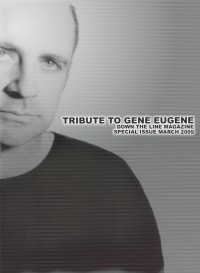

CMnexus
: Contemporary Christian culture, music, and media.
|
Gene EugeneOn the cover
March 2009
Down The Line | Media coverage:- Jul 1991 in Notebored "Looking Below The Surface", by Chris Heyn
- May 2000 in 7ball "Gene Eugene Andrusco 1961 - 2000"
- May 2000 in CCM "On The Beat: Prolific artist / producer Gene Eugene dead at 39", by Thom Granger
- Jun 2000 in CCM "Remembering Gene", by Dave Urbanski
- Jul 2000 in Prism "Music Notes: There Is A Reason and I Don't Know What It Is", by Dwight Ozard
- Jan 2001 in HM "Concert Review: Gene Eugene Tribute Show", by Chuck Cummings
- Mar 2009 in Down The Line "Gene Eugene", by Steve Ruff
- Mar 2009 in Down The Line "Gene "Eugene" Andrusco: His Friends and Family Remember: Mike Knott on Gene Eugene"
- Mar 2009 in Down The Line "Gene "Eugene" Andrusco: His Friends and Family Remember: Jon Knox (Adam Again) on Gene Eugene"
- Mar 2009 in Down The Line "Gene "Eugene" Andrusco: His Friends and Family Remember: Dan Michaels on Gene Eugene"
- Mar 2009 in Down The Line "Gene "Eugene" Andrusco: His Friends and Family Remember: Glenn Holland (441) on Gene Eugene"
- Mar 2009 in Down The Line "Gene "Eugene" Andrusco: His Friends and Family Remember: Michael Pritzl (The Violet Burning) on Gene Eugene"
- Mar 2009 in Down The Line "Gene "Eugene" Andrusco: His Friends and Family Remember: Brian Doidge (L.S. Underground) on Gene Eugene"
- Mar 2009 in Down The Line "Gene "Eugene" Andrusco: His Friends and Family Remember: Jason Martin (Starflyer 59, The Brothers Martin) on Gene Eugene"
- Mar 2009 in Down The Line "Gene "Eugene" Andrusco: His Friends and Family Remember: Jeff Ebel on Gene Eugene"
- Mar 2009 in Down The Line "Gene "Eugene" Andrusco: His Friends and Family Remember: Greg Lawless (Adam Again) on Gene Eugene"
- Mar 2009 in Down The Line "Gene "Eugene" Andrusco: His Friends and Family Remember: Steve Hindalong (The Choir, The Lost Dogs) on Gene Eugene"
- Mar 2009 in Down The Line "Gene "Eugene" Andrusco: His Friends and Family Remember: Ojo Taylor (Undercover) on Gene Eugene"
- Mar 2009 in Down The Line "Gene "Eugene" Andrusco: His Friends and Family Remember: Michael Roe (The 77s, The Lost Dogs) on Gene Eugene"
- Mar 2009 in Down The Line "Gene "Eugene" Andrusco: His Friends and Family Remember: Mike Stand (The Altar Boys, Clash of Symbols) on Gene Eugene"
- Mar 2009 in Down The Line "Gene "Eugene" Andrusco: His Friends and Family Remember: Terry Scott Taylor (Daniel Amos, The Swirling Eddies, The Lost Dogs) on Gene Eugene"
- Mar 2009 in Down The Line "Gene "Eugene" Andrusco: His Friends and Family Remember: Brandon Ebel (Tooth & Nail Records) on Gene Eugene"
- Mar 2009 in Down The Line "Gene "Eugene" Andrusco: His Friends and Family Remember: Carole Gilliland (Gene's Mom) on Gene Eugene"
- Mar 2009 in Down The Line "Gene "Eugene" Andrusco: His Friends and Family Remember: Lisa Andrusco (Gene's Sister) on Gene Eugene"
- Mar 2009 in Down The Line "In Closing..."
- Mar 2009 in Down The Line "Matt's Musings and Meanderings", by Matt Crosslin
- Mar 2009 in Down The Line "Gene "Eugene" Andrusco: A Special Photo Selection"
- Aug 2015 in Down The Line "Harry Barnes (Blue Collar Records)"
|
|